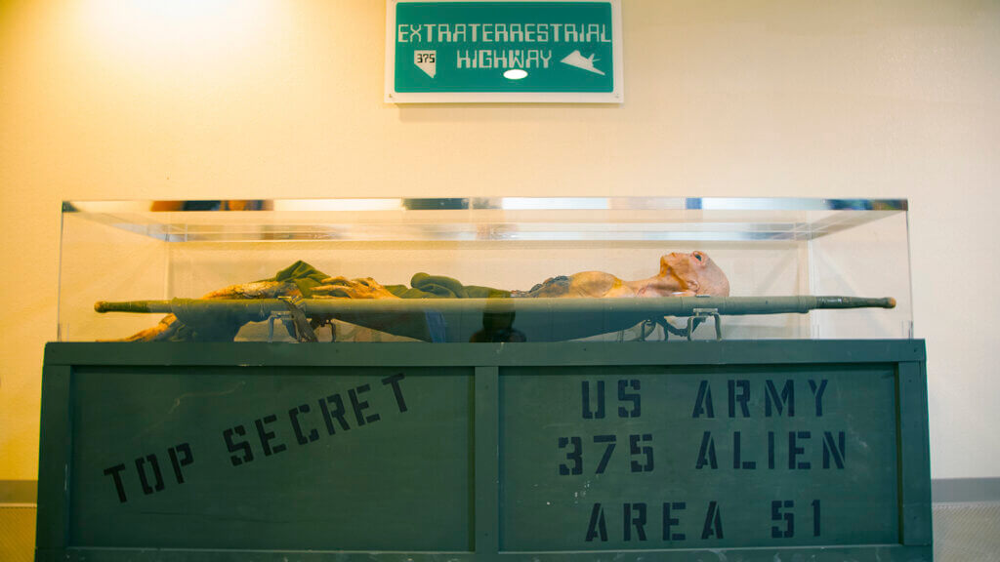
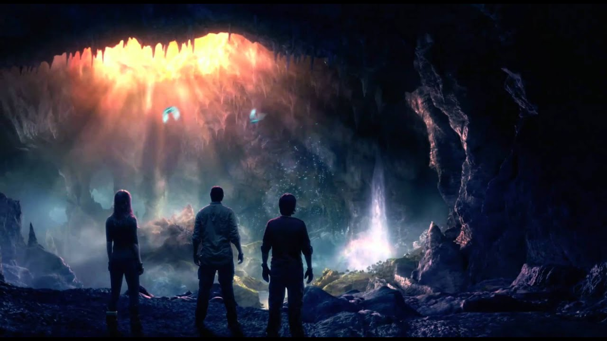
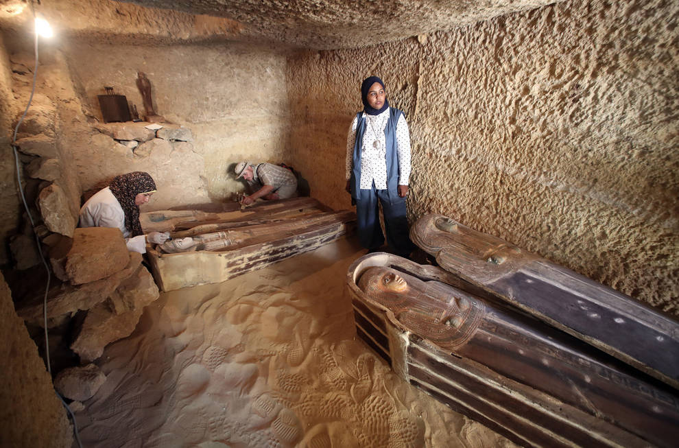

Esta pagina es una asociación en la que investigamos los misterios del mundo y desafiamos el sistema que nos controla y manipula lo que pensamos para poder conocer la verdadera realidad, sientete libre de viajar entre nuestras paginas y convencerte a ti mismo de unirte a nosotros
Nos dedicamos a hacer diversas actividades en las que nuestros miembros viajan a lugares del mundo a descubrir sus secretos viendolo con sus propios ojos, aqui os enseñamos algunas de ellas
| Viajes | |
 |
 |
| Imagenes de nuestro primer viaje a la antartida, antes de llegar al borde uno soldados nos echaron de alli | Fotos de unos colaboradores anonimos que se colaron en la base militar del area 51 y captaron esta imagen |
|  |  |
| Viaje al centro de la tirra entrando por un volcan muerto | En egipto esta familia nos ayudo a abrir un sarcofago en el que vimos los cuerpos de algo que no parecia ser de este mundo |